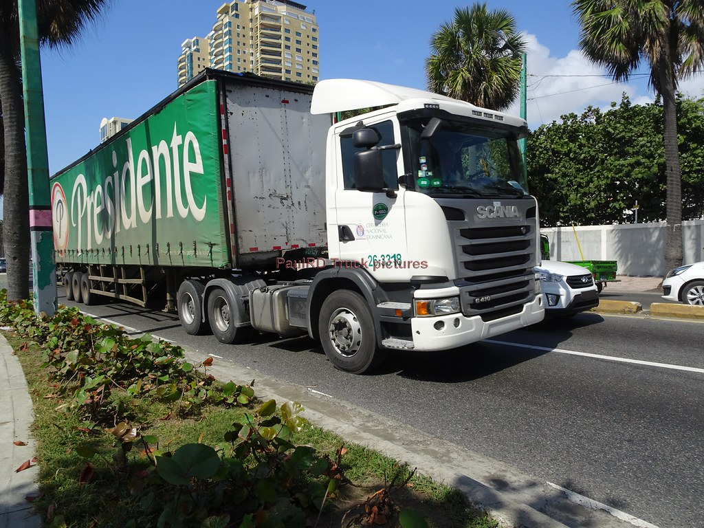

cerveceria
< ofrecemos un servicio logístico confiable y seguro para el transporte de productos de cervecerías, garantizando que lleguen frescos y en perfectas condiciones a su destino.
Ofrecemos transporte profesional con camiones equipados para el traslado de mercancías desde y hacia muelles y cervecerías.
informacionnos especializamos en ofrecer soluciones de transporte confiables y seguras con camiones equipados para el traslado de mercancías desde y hacia muelles y cervecerías
Cumplimiento estricto de horarios Seguridad en el manejo de la carga Personal capacitado y con experiencia Tarifas competitivas y atención personalizada
brindamos soluciones de transporte confiables y seguras, utilizando camiones equipados para el traslado de mercancías desde y hacia muelles y cervecerías. Nuestro compromiso es garantizar puntualidad, seguridad y eficiencia en cada entrega.
Puntualidad garantizada: Respetamos los horarios acordados. Seguridad en la carga: Manejo profesional con protocolos de protección. Eficiencia logística: Rutas optimizadas para reducir tiempos y costos

Ventajas de nuestro servicio Flota moderna y en excelente estado. Conductores con amplia experiencia en rutas portuarias y distribución de bebidas. Servicio disponible los 7 días de la semana. Seguimiento en tiempo real de la carga. Cobertura en todo el territorio nacional. Tarifas competitivas sin sacrificar la calidad. Flexibilidad para cargas completas o parciales. Asesoría personalizada en logística y transporte\
informacionDía Horario de Atención Tipo de Servicio Lunes a Viernes 6:00 a.m. – 10:00 p.m. Transporte regular y urgente Sábados 7:00 a.m. – 8:00 p.m. Transporte regular Domingos 8:00 a.m. – 6:00 p.m. Servicios especiales con reserva Días festivos Según coordinación previa Servicios especiales
informacionTransporte confiable: Su mercancía siempre llega a tiempo y en perfectas condiciones. Especialización en muelles y cervecerías: Conocimiento de rutas, procesos y requisitos específicos. Atención personalizada: Un equipo dedicado a responder y adaptarse a sus necesidades. Ahorro de tiempo y costos: Rutas optimizadas y logística eficiente. Seguridad garantizada: Protocolos estrictos para el cuidado de su carga.
< ofrecemos un servicio logístico confiable y seguro para el transporte de productos de cervecerías, garantizando que lleguen frescos y en perfectas condiciones a su destino.